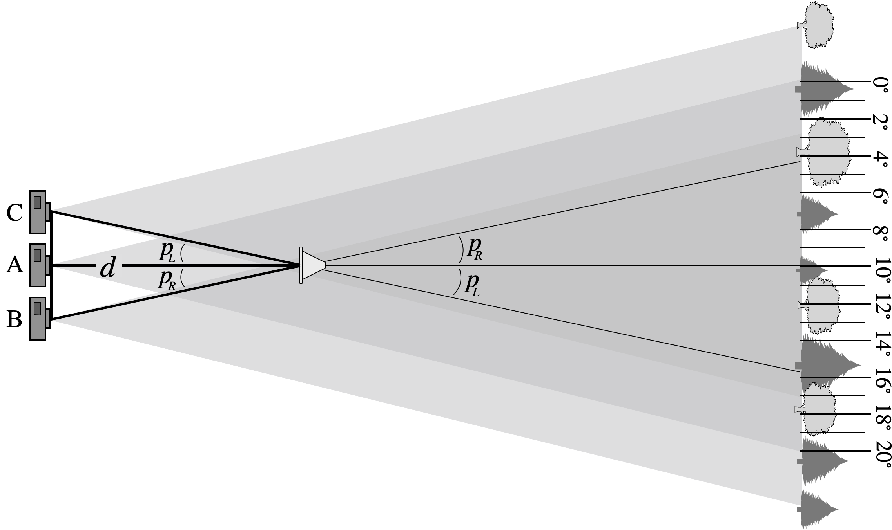

You will now figure out exactly how much the cone appeared to shift as you moved between Positions A, B and C.
Print out the photo you took of the background trees (with no cone present). Ask your professor or TA if you need help printing. Your next step is to use a pen and ruler to mark out even degree spacings on this photo. Proceed as follows.
What was the horizontal FOV, \(\theta\)? You found it above in Sec. 2: \[\theta = \hspace{1.15cm}\]
Use a ruler to measure the width \(w\) of your printed photo in centimeters. Record the value here: \[w = \hspace{1.25cm}\]
Compute the number of centimeters per degree by dividing: \[\frac{w}{\theta} = \hspace{1.25cm}\]
With this value, use a ruler to mark off even degree spacings on your photograph. An example of what at \(20^\circ\) FOV would look like is shown below.
Look at the photo you took of the cone from Position A. Note the cone’s location relative to the background trees. Compare its position to the prepared image from the previous section. What is the angular location of the cone, as seen from Position A? \[\theta_A = \hspace{1.4cm}\] Now, look a your photos from Positions B and C. Again, look at the trees behind the cone, compare to your image with marked degrees, and determine these positions of the cone: \[\theta_B = \hspace{3.4cm} \theta_C =\]
We define the parallax angle as the angle by which the cone appears to move when you change locations. You took photos of your star from three positions. The first position (A) is the baseline. The angle \(p_R\) (see the figure above) represents the amount by which the cone appeared to move when going to the right from A to B. Likewise, \(p_C\) gives the amount the cone shifted when going to the left from A to C. Record your parallax angles here: \[p_R = \theta_A - \theta_B = \qquad \qquad \qquad \qquad p_L = \theta_C - \theta_A =\]
